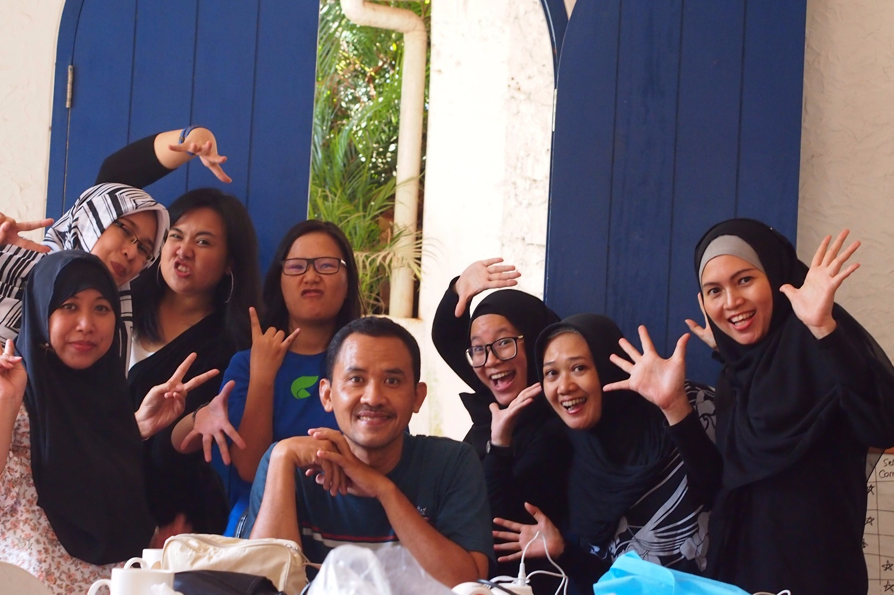

[ Home | About ]
Sejak memiliki anak angkat, presenter dan artis film Kartika Putri (24) kian peduli dengan keadaan sekitarnya. Dia enggan mengajak si kecil, Baby Juna, ke lokasi pengambilan gambar karena di situ pasti ada orang yang merokok.

"Saya tidak ingin membawa dia ke tempat yang tidak sehat. Lingkungan seperti tempat shooting belum tentu bagus untuk anak-anak," kata Kartika seusai jumpa pers film Komedi Moderen Gokil! produksi MD Pictures, di Kuningan, Jakarta, Rabu (9/9).
Wikipedia adalah sebuah ensiklopedia multibahasa yang dapat disunting, disalin, dan disebarkan secara bebas. Sebanyak 728.680 orang sukarelawan telah mencoba menyunting dan menciptakan 365.632 artikel dalam bahasa Indonesia.